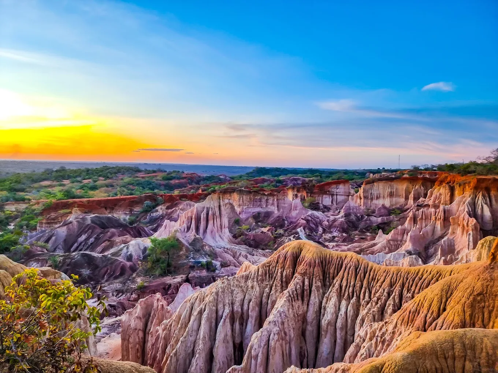
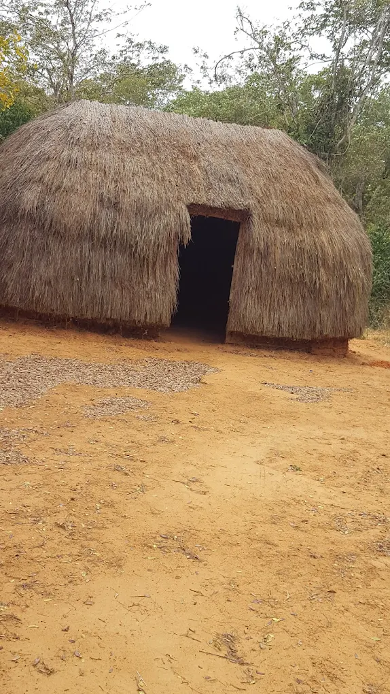
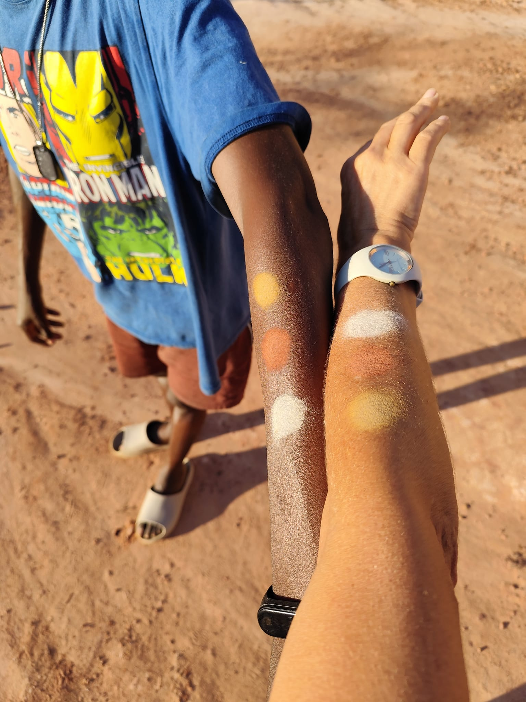
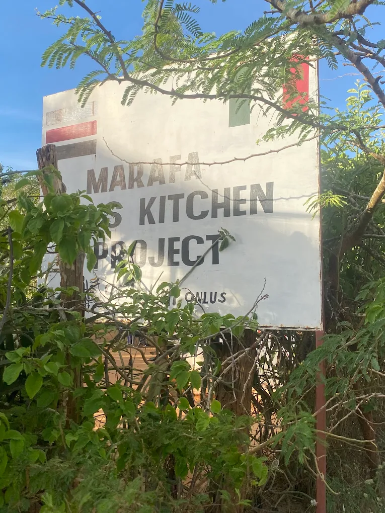

Escursione di mezza giornata a Watamu




Partenza dal vostro hotel nel primo pomeriggio insieme a una delle nostre guide che vi accompagnerà al Canyon di Marafa, conosciuto anche come Hell's Kitchen.
Una volta arrivati, incontreremo una guida specializzata che vi racconterà la storia, le leggende e le curiosità di questo spettacolare canyon naturale.
Inizieremo il tour all'interno delle gole attraversando sentieri panoramici e ammirando le incredibili formazioni rocciose modellate dal vento e dalla pioggia nel corso dei secoli.
Risaliremo poi verso i punti panoramici per attendere il tramonto, il momento più suggestivo della visita, quando le rocce si colorano di sfumature rosse, arancioni e dorate.
Rientro al vostro resort previsto intorno alle ore 19:15.